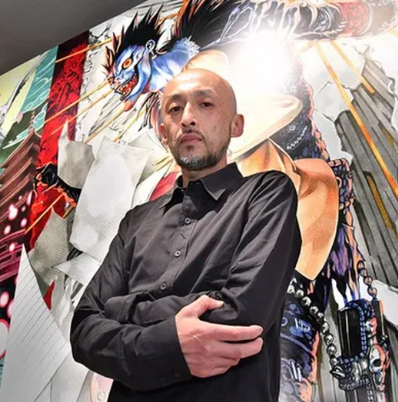

작가
오바타 타케시
(小畑 健, 1969.2.11~)
일본의 만화가 및 일러스트레이터.
《바쿠만》의 작화를 담당한 만화가이다.
1985년 《500광년의 신화》로 데즈카 상
준입선. 고등학교 2학년 때(1986년) 투고한
《사이보그 할아버지 G》로 히시가타 시게루
(土方 茂)라는 필명을 사용하며 1989년 연재
데뷔하였다. 그 다음부터는주로 스토리작가와
같이 작업하고 있으며 대표작으로는 《바쿠만》,
《고스트 바둑왕》,《데스노트》 등이 있다.
2000년 《고스트바둑왕》으로 제45회 소학관
만화상, 2003년에는 제7회 데즈카
오사무 문화상 신생상을 받았다.
오바 츠구미
(大場 つぐみ, 생년월일 불명)
일본의 만화 스토리 작가.
《바쿠만》의 스토리를 담당한 만화가이다.
이전 활동 기록이 전혀 없는 상태에서
2003년 《데스노트》(그림: 오바타 다케시)의
단편 버전이 갑자기 《주간 소년 점프》에 게재
되었고, 이 단편을 기반으로 한 《데스노트》로
연재 데뷔를 하게 된다. 대표작으로는
《데스노트》,《바쿠만》이 있고, 현재
《플래티넘 엔드》를 연재 중이다.
Copyright 2024 . Bakuman . All rights reserved.
22361063 양채윤 직무수행능력평가1